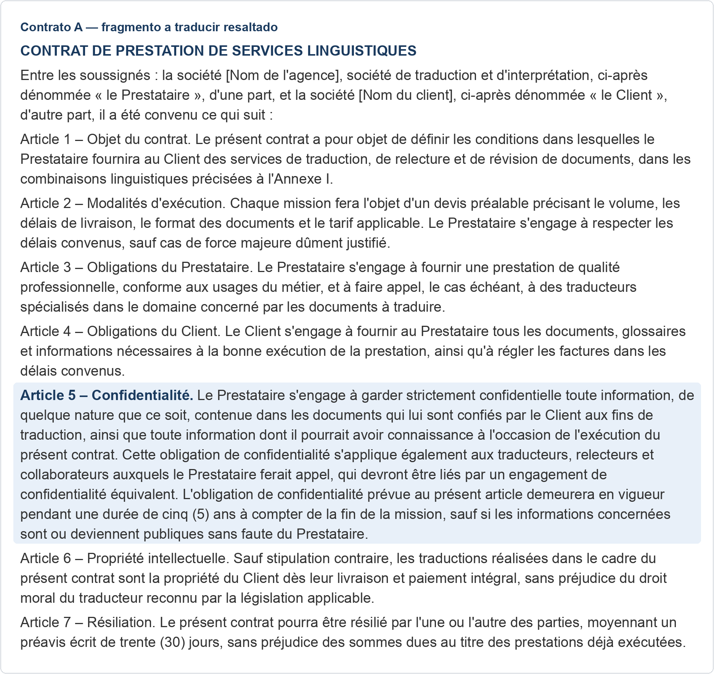
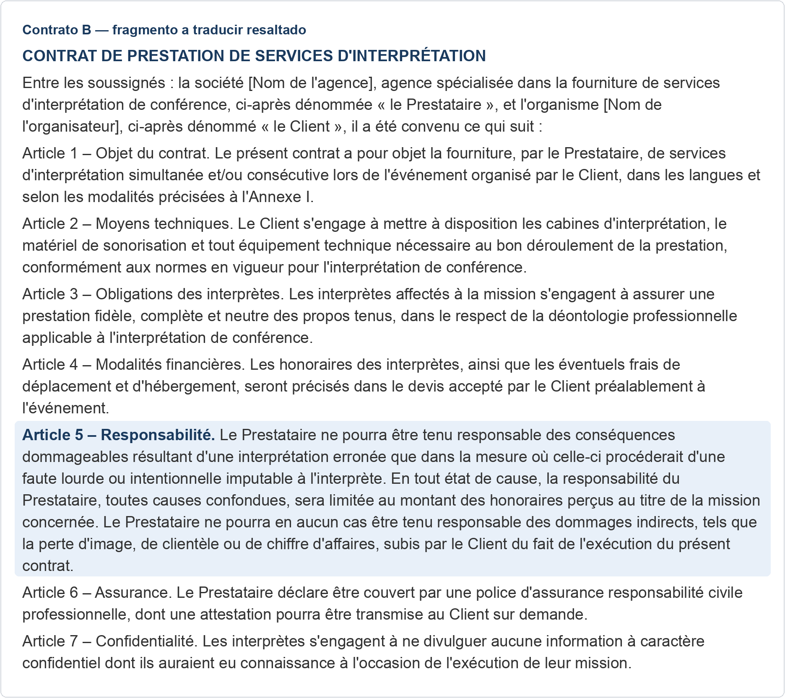
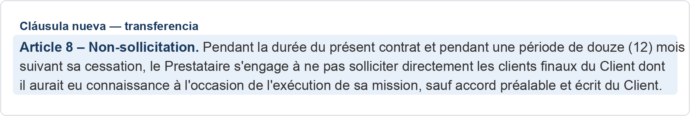

Contrato A · Artículo 5 — Confidencialidad

Pulsa sobre el texto para verlo más grande.
Traducción de referencia
Texto original del fragmento
Términos que suelen plantear dudas
| Original | Propuesta | Matiz |
|---|---|---|
| Prestataire | Prestador | Mantén la coherencia con «Client» → «Cliente», con mayúscula inicial: son partes definidas del contrato. |
| aux fins de traduction | a efectos de traducción | Registro más jurídico que «con fines de traducción». |
| engagement de confidentialité équivalent | compromiso de confidencialidad equivalente | |
| sans faute du Prestataire | sin culpa del Prestador | Término jurídico «culpa»; no «fallo» ni «error». |
| de quelque nature que ce soit | de cualquier naturaleza que sea | También vale «sea cual sea su naturaleza». |
Contrato B · Artículo 5 — Responsabilidad

Pulsa sobre el texto para verlo más grande.
Traducción de referencia
Texto original del fragmento
Errores frecuentes de la traducción automática
| Original | Propuesta | Matiz |
|---|---|---|
| faute lourde | falta grave | La traducción automática puede dar «falta pesada», que no es el término jurídico. |
| toutes causes confondues | por cualquier causa que sea | También «sea cual sea la causa». El calco literal («todas las causas confundidas») resulta confuso. |
| dommages indirects | daños indirectos | Hay que conservar la distinción jurídica con los daños directos al simplificar la frase. |
| chiffre d'affaires | cifra de negocios / facturación | Ambas son válidas; evita calcos como «cifra de asuntos». |
Si respondiste sobre la Tarea A (Confidencialidad)
Efecto jurídico: el Prestador debe mantener estrictamente confidencial toda la información de los documentos del cliente y la que conozca con motivo del contrato; la obligación alcanza también a traductores, revisores y colaboradores, que deben firmar un compromiso equivalente, y dura cinco años desde el fin del encargo.
Excepción: la información que sea o llegue a ser pública sin culpa del Prestador.
| Término original | Propuesta de referencia |
|---|---|
| Prestataire | Prestador |
| confidentialité | confidencialidad |
| aux fins de traduction | a efectos de traducción |
Si respondiste sobre la Tarea B (Responsabilidad)
Efecto jurídico: el Prestador solo responde de una interpretación errónea si hay falta grave o intencionada imputable al intérprete; su responsabilidad total queda limitada a los honorarios percibidos por esa misión.
Exclusión: los daños indirectos (pérdida de imagen, de clientela o de facturación) no se indemnizan en ningún caso.
| Término original | Propuesta de referencia |
|---|---|
| responsabilité | responsabilidad |
| faute lourde | falta grave |
| dommages indirects | daños indirectos |
Cláusula nueva · Artículo 8 — Non-sollicitation

Pulsa sobre el texto para verlo más grande.
Traducción de referencia
Texto original del fragmento
Términos clave de esta cláusula
| Original | Propuesta | Matiz |
|---|---|---|
| non-sollicitation | no captación (de clientes) | Cláusula de «no captación de clientes». |
| clients finaux | clientes finales | |
| cessation | finalización / extinción (del contrato) | |
| s'engage à… | se compromete a… | Ya aparecía en las tareas A y B. |
| sauf accord préalable et écrit | salvo acuerdo previo y por escrito |
Términos que deberías reconocer de las tareas A y B: «Prestataire» → «Prestador», «Client» → «Cliente» y la estructura «s'engage à…» → «se compromete a…».